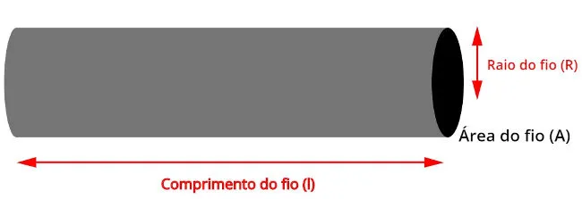
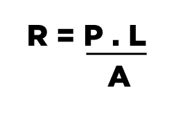
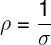

Segunda Lei de Ohm
A Segunda Lei de Ohm é uma equação que descreve como as características físicas de um condutor influenciam sua resistência elétrica. Ela afirma que a resistência elétrica de um corpo é diretamente proporcional ao seu comprimento e à resistividade do material, e inversamente proporcional à sua área de seção transversal.
Em outras palavras, a resistência de um condutor depende de suas propriedades geométricas e da resistividade, que é uma característica intrínseca do material. Para simplificar, a Segunda Lei de Ohm nos diz que quanto maior for o comprimento de um fio ou maior a resistividade do material, maior será sua resistência elétrica. Por outro lado, quanto maior for a espessura de um fio (ou seja, sua área transversal), menor será a resistência.
Essa relação é fundamental para entender como os diferentes materiais e formas de condutores afetam a passagem de corrente elétrica.
A fórmula desta lei é representada por:

Tal que:
R – resistência elétrica (Ω – Omhs)
ρ – resistividade (Ω * m – Ohms vezes metro)
L – comprimento do corpo (m – metros)
A – área transversal do corpo (m² – metros quadrados)
A resistividade, simbolizada pela letra ρ, é uma característica do material que está relacionada a propriedades microscópicas, como a quantidade de portadores de carga (elétrons, no caso dos metais) presentes para conduzir a eletricidade e o tempo em que essas cargas conseguem se mover sem sofrer colisões com a rede cristalina do material (arranjo dos átomos). Além disso, a resistividade é definida como o oposto da condutividade de um material.

Tal que:
ρ – resistividade (Ω x m – Ohms vezes metro)
σ – condutividade (Ω-1 . m-1 inverso de ohms vezes metro)
Tabela de resistividade
A resistividade é uma das grandezas físicas que possui uma ampla variação de valores, podendo oscilar entre as ordens de grandeza de 10-6 até 1018. A tabela abaixo mostra os valores de resistividade para alguns materiais conhecidos.
| Material | Resistividade (Ω.m) | Resistividade |
|---|---|---|
| Prata | 1,6 x 10-6 | Extremamente baixa |
| Cobre | 1,7 x 10-6 | Muito baixa |
| Alumínio | 2,8 x 10-6 | Baixa |
| Quartzo fundido | 75 x 1018 | Extremamente alta |
Exemplos:
A seguir nós temos alguns exemplos para fixar:
-
Variação da resistência com o comprimento do fio:
Se um fio de cobre tem 1 m de comprimento e resistência de 0,02 Ω, ao aumentar seu comprimento para 10 m, sua resistência também aumentará proporcionalmente:
R' = R × (L' / L) = 0,02Ω × (10m / 1m) = 0,2Ω -
Comparação entre cobre e alumínio:
O cobre tem uma resistividade menor que o alumínio (ρ_cobre = 1,7 × 10−8 Ω·m e ρ_alumínio = 2,8 × 10−8 Ω·m). Se dois fios tiverem o mesmo comprimento e espessura, o de alumínio apresentará maior resistência elétrica, resultando em maior perda de energia:
ρ_cobre = 1,7 × 10−8 Ω·m, ρ_alumínio = 2,8 × 10−8 Ω·m -
Influência da espessura:
Se dois fios de mesmo material e comprimento possuem diâmetros diferentes, o mais fino terá maior resistência, pois a área da seção transversal (A) influencia inversamente a resistência. Por exemplo, se um fio de cobre têm A = 1 mm2 e resistência R = 0,1 Ω, um fio com A = 4 mm2 terá resistência reduzida pela metade:
R' = R × (A / A') = 0,1Ω × (1mm2 / 4mm2) = 0,025Ω
Exercícios
Clique aqui para ir para os exercícios sobre a 2ª Lei de Ohm